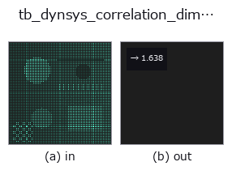

typed op• 데이터 종류: points → feature
• 호출: fullseye.apply(img, "tb_dynsys_correlation_dimension", a=0.5, b=0.5)(2-D 는 이미지 1 장 + 스칼라 노브 2 개 a,b∈[0,1] 모델)

*그림은 128×128 합성 입력에서 실제로 실행한 출력. 왼쪽이 입력, 오른쪽이 출력. 점군은 위에서 본 산점도(밝기 = z), 1-D 열은 꺾은선, 볼륨은 z 방향 최대값 투영, 동영상은 가운데 프레임, 복소 영상은 진폭이며, 그림이 되지 않는 반환값은 값 자체를 표시한다.*
노브 a 를 훑기(0.1 / 0.5 / 0.9, 다른 노브는 기본값):
▸ tb_dynsys_correlation_dimension: knob a sweep (docs site)
*노브 b 는 출력을 바꾸지 않는다(실측: 0.1 / 0.5 / 0.9에서 동일).*
단계(앞에 오는 op → 이 op, 왼쪽에서 오른쪽으로):
▸ tb_dynsys_correlation_dimension: stages (docs site)
그라스베르거–프로카치아 상관 차원 —— `log C(r)` 의 기울기。
> 아래 상세 설명은 원문입니다 —— 요약과 제목은 번역되어 있습니다.
`C(r) is the fraction of point pairs closer than r`; for a self-similar
set it grows like `r**D`, and *D* is read off the straight part of the
log-log plot (fitted on the middle 60 % of the radii, where the curve is free
of the small-`r noise floor and the large-r` saturation).
★Why this earns its place: unlike box counting it needs no grid, and its
answers are known for simple sets — a circle gives 1, a filled square
2, a Cantor set `log2/log3 = 0.6309`. It measures a different quantity
from the existing `fractal_dimension` (box counting), so the two are an
independent pair rather than two names for one number.
Returns a `measurement`: the fitted dimension.
Raises `ValueError`: fewer than 32 points; not a 2-D array; non-finite
input; a degenerate cloud (every point identical); a radius range that leaves
no pairs.
Limits: sub-sampled to *max_points* (pairs grow quadratically). ★The
dominant error is not the sub-sampling but the radius window: the
default range is the 1st-25th percentile of pair distances, and on a *bounded*
set its upper end runs into the boundary, where `C(r)` saturates and flattens
the slope. Measured on a unit square (true D = 2): 1.879 with the default
window and 1.873 / 1.879 / 1.871 at 400 / 1,500 / 3,000 points —— more points
do not help; narrowing the window to `r_lo=0.01, r_hi=0.1` gives 1.947
and `0.002 / 0.05` gives 2.050. Pass *r_lo* / *r_hi* explicitly when the
answer matters, and report the window with the number.
Typed bridge of the math op `dynsys_correlation_dimension into the 2-D evolution registry: the same implementation, called under the op(v, a, b) convention. a drives n_radii (default 24); b` is unused.
• 샘플 데이터 카탈로그(DL URL / 라이선스) —— 2-D 는 skimage.data(BSD/public)+ 합성, 3-D 는 실데이터 소스(Stanford/PDS 등)의 DL URL.
• 연산자의 내력·참고문헌 —— 이 연산자 족의 바탕이 된 연구/기법의 출처.
아래 프로그램은 실제로 실행됨을 확인했습니다(그림과 같은 입력). Studio 도움말에서는 이 블록이 버튼이 되어 즉시 불러와 실행할 수 있습니다.
img_to_points 0.50 0.50 tb_dynsys_correlation_dimension 0.50 0.50
▸ Load this pipeline · Load & run
아래 예제는 원래의 대장 op dynsys_correlation_dimension를 호출한다. 이 브리지 op는 같은 구현을 fn(v, a, b) 규약에 맞춘 것뿐이므로 동작은 그대로 적용된다(호출 형식만 다름).
• poc_what_a_picture_cannot_check — py -3.11 examples/poc_what_a_picture_cannot_check.py
feature 를 입력으로 받는 것)typed)tb_points_to_voxel · tb_estimate_point_normals · tb_iss_keypoints · tb_project_points · tb_render_point_depth · tb_statistical_outlier_removal · tb_radius_outlier_removal · tb_voxel_grid_downsample
*Provenance: ops.py — 2D 연산자 레지스트리. 이 op 노트는 tools/opdocs.py md 가 자동 생성합니다(직접 편집하지 마세요).*
© 2026 Kazufumi Furuse — Fullseye operator documentation. Licensed under Apache-2.0.
{kind=link}
{kind=link}